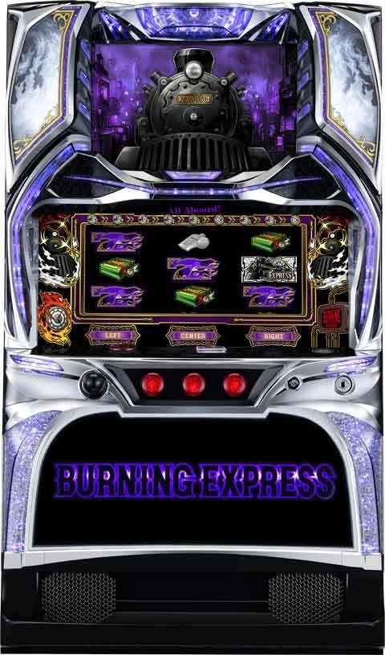
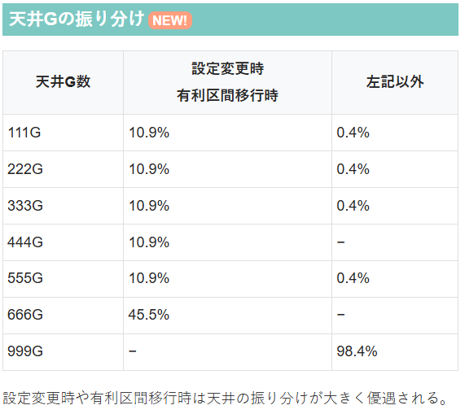

バーニングエクスプレス

【天井情報】
通常時を999G＋α消化でバーニングボーナス or エクスプレスボーナスに当選。
設定変更時は天井が最大666Gに短縮。
有利区間切断後も天井が最大666Gに短縮。
【リセット判別】
不明
【有利区間について】
不明
狙い目
【リセット狙い】
180Gから
【ゲーム数天井狙い】
積極派 600Gから
慎重派 750Gから
有利切れ後 リセット狙い同様
※現状どのタイミングで有利区間切断するか不明
【ゾーン狙い】
※設定変更後、有利区間切断後のみ
111Gゾーン 60Gから規定ゲーム数を踏んで5-10Gくらい回してやめ？
※222Gゾーン以降はそのまま天井狙い
※ゾーン当選時は規定ゲーム数から10G以内には当選？即告知？
【示唆関連の押し引きについて】
不明
【有利区間関連狙い】
不明
やめ時
ボーナス終了後即ヤメ？
8ラウンド以上継続時は30G+αのターミナルゾーンが終了するまで？
その他

参考元
かめとうさぎのパチスロブログ
基本情報
- メーカー: 北電子
- 機械割: 98.5% 〜 110.2%
- 導入開始日: 2025年12月01日（月）
- ゲーム性概要: ●完全告知のAT機 ●通常時は毎ゲーム、全役でボーナスを抽選 ●バーニングボーナスは規定ポイント獲得で次ラウンドへ継続 ●8ラウンド以上継続後のAT終了時にターミナルゾーンへ ●ターミナルゾーンは30G＋αのボーナス高確率ゾーン ●ターミナルゾーン中のボーナスはバーニングエクスプレスボーナス濃厚 ●バーニングエクスプレスボーナス後は再びターミナルゾーン突入！


打ち方
打ち方・小役
打ち方（小役狙い）
［最初に狙う絵柄］ 左リール上段付近に白BARを目押し。
［スイカ停止時はスイカを目押し］ スイカ停止時かつ演出発生時（無演出時はスイカを否定）は、中リールにスイカを目押し（白BARor紫7目安）。右リールはフリー打ちでOKだ。
［レア役］
［リーチ目例］
変則押しはNG
押し順ナビ非発生時は左1stでの消化を推奨だ。
解析情報通常時
ボーナス抽選
ボーナス当選率
通常時には内部状態やモードといった概念はなく、シンプルに全役でボーナスを抽選（告知ランプ点灯でボーナス濃厚）。 リールロックは高設定ほど発生しやすく、発生時はボーナスの期待大となる。
リールロック発生時の成立役別・ボーナス期待度
リールロック時はレア役を否定した時点でボーナス濃厚。レア役でも半分以上がボーナスになる。
ボーナス比率
| 種別 | リーチ目以外 | リーチ目 |
|---|---|---|
| バーニングボーナス | 50% | 52% |
| エクスプレスボーナス | 50% | 48% |
リーチ目時は若干バーニングボーナス比率が高いが、基本的にバーニングボーナス：エクスプレスボーナスの比率は1：1だ。
天井
天井ゲーム数振り分け
| ゲーム数 | 設定変更時・有利区間移行時 | 左記以外 |
|---|---|---|
| 111G | 10.9% | 0.4% |
| 222G | 10.9% | 0.4% |
| 333G | 10.9% | 0.4% |
| 444G | 10.9% | 一 |
| 555G | 10.9% | 0.4% |
| 666G | 45.5% | 一 |
| 999G | 一 | 98.4% |
天井は最大999G＋αだが、3桁ゾロ目ゲーム数の振り分けもある。 とくに設定変更後は最大666G＋αに短縮されるうえ、111〜555Gの振り分けも多いため狙い目だ。
フリーズ
ロングフリーズ動画
バーニングエクスプレスボーナス濃厚のプレミアム演出だ。
解析情報ボーナス時
バーニングボーナス
バーニングボーナス概要
出玉増加のメインとなるボーナスで、消化中は規定ポイントを貯めればラウンド継続となり、ゲーム数消化後に次ラウンドに移行。ラウンド数ごとにゲーム数と規定ポイントが変化する。 5R目と7R目は規定ポイントを貯めると択当ての「バーニングチャレンジ」が発生して、成功すれば次ラウンドに移行。 8R到達時の終了後はボーナス終了時にバーニングエクスプレスボーナスをかけた「ターミナルゾーン」へ移行する。
バーニングボーナス 性能
| 当選契機 | 通常時の抽選、ゲーム数消化 |
|---|---|
| 純増 | 約5.0枚/G |
| 継続ゲーム数 | 20or40or60G（ラウンドで変化） |
| 平均獲得枚数 | 約500枚 |
| 消化中の抽選 | 払い出し枚数分のポイント加算、 ベル連フリーズ |
| 規定ポイント 到達後の抽選 | ベル連フリーズストック抽選 |
| 備考① | 5・7R継続後は バーニングチャレンジへ移行 |
| 備考② | 8R以降継続時はボーナス終了時に ターミナルゾーンへ移行 |
ラウンドごとの継続ゲーム数・規定ポイント
| ラウンド | 継続ゲーム数 | 規定ポイント |
|---|---|---|
| 1・6・7R | 40G | 300pt |
| 2・3・4・5R | 20G | 150pt |
| 8R以降 | 60G | 500pt |
ラウンドごとに規定ポイントを貯めて、最終的に8R継続以上を目指すゲーム性だ。
［規定ポイント］ 払い出し枚数＝ポイントとなるため、15枚ベルのヒキが重要。 ベル揃いやレア役後にベル連フリーズ（いわゆる0G連的要素）が発生すれば大量ポイント獲得に期待できる。
獲得ポイント（払い出し枚数）
| 役 | 獲得ポイント |
|---|---|
| 4枚ベル | 4pt |
| 15枚ベル | 15pt |
| スイカ | 5pt |
| チェリー | 3pt |
上記ポイントに加え、ベル連フリーズ当選時は0G連回数に応じてポイントが加算される（ベル連フリーズは１契機で最大5回発生）。
ベル連フリーズ
ベル揃いやレア役契機で発生する要素で、発生時は擬似遊技（0G連）でポイントを加算。ベル連フリーズは最大5連（15pt×1〜5回）まで継続する可能性がある。
ベル連フリーズ当選率
| ベル連フリーズ回数 | スイカ | チェリー |
|---|---|---|
| 1回 | 30.1% | 39.8% |
| 2回 | 一 | 5.1% |
| 3回 | 一 | 5.1% |
| 5回 | 1.6% | 一 |
| トータル | 31.7% | 50.0% |
実戦上、ベル揃いからのベル連フリーズもそれなりに発生していたため、レア役を引かなくても展開次第で十分に規定ポイントを目指せる。
バーニングチャレンジ概要
5・7R継続後に発生する択当てで、択当てに成功すれば白BARが揃って次ラウンドへ移行。 5R後は4択or2択or全ナビ、7R後は2択or全ナビになる。 失敗した場合は10G間のリベンジラウンドへ移行。リベンジラウンド中に150ptを貯めることができれば再度バーニングチャレンジへ移行する。
バーニングチャレンジ 性能
| 突入契機 | バーニングボーナスの5・7R継続後 |
|---|---|
| 成功条件 | 択当て成功 |
| 択当ての種類 | 4択or2択or全ナビ（7R後は2択or全ナビ） |
| 備考① | レア役で択数昇格抽選 |
| 備考① | 失敗時はリベンジラウンドへ移行 |
［択当てパターン］
［リベンジラウンド］ 抽選内容はほぼバーニングボーナスと同じでベル連フリーズも発生。150ptを貯めれば再びバーニングチャレンジに挑戦できる。
リベンジラウンド 性能
| 突入契機 | バーニングチャレンジ失敗後 |
|---|---|
| 継続ゲーム数 | 10G |
| 規定ポイント | 150pt |
| 成功期待度 | 約25% |
| 備考 | 規定ポイント到達でバーニングチャレンジへ、 消化中の抽選はバーニングボーナスと同じ |
ベル連フリーズ
ベルナビの押し順別・ベル連フリーズ発生率 バーニングボーナス中
| 継続回数 | 左1stナビ | 中or右1stナビ | トータル選択率 |
|---|---|---|---|
| 1回 | 6.5% | 9.4% | 8.6% |
| 2回 | 0.6% | 1.5% | 1.2% |
| 3回 | 0.3% | 0.7% | 0.6% |
| 4回 | 0.2% | 0.4% | 0.3% |
| 5回 | 0.2% | 0.1% | 0.2% |
| トータル | 7.8% | 12.1% | 10.9% |
リベンジラウンド中
| 継続回数 | 左1stナビ | 中or右1stナビ | トータル選択率 |
|---|---|---|---|
| 1回 | 0.4% | 50.0% | 35.6% |
| 2回 | 0.01% | 0.01% | 0.01% |
| 3回 | 0.01% | 0.01% | 0.01% |
| 4回 | 0.01% | 0.01% | 0.01% |
| 5回 | 0.01% | 0.01% | 0.01% |
| トータル | 0.4% | 50.0% | 35.6% |
バーニングエクスプレスボーナス中
| 継続回数 | 左1stナビ | 中or右1stナビ | トータル選択率 |
|---|---|---|---|
| 1回 | 9.2% | 21.9% | 18.2% |
| 2回 | 0.9% | 10.2% | 7.5% |
| 3回 | 0.5% | 6.3% | 4.6% |
| 4回 | 0.3% | 1.6% | 1.2% |
| 5回 | 0.2% | 0.4% | 0.3% |
| トータル | 11.1% | 40.4% | 31.8% |
※全設定共通
どの状態でも左1stより中or右1stベルのほうがベル連フリーズが発生しやすい。
ベルナビ発生タイミング別・ベル連フリーズ発生率
| 滞在 | レバーON時 | リール回転開始時 |
|---|---|---|
| バーニングボーナス中 | 2.5% | 75.7% |
| バーニングエクスプレスボーナス中 | 21.9% | 92.2% |
※全設定共通
リール回転開始時のベルナビならベル連フリーズが期待度が大幅にアップする。
特殊ナビの発生確率
| 滞在 | デカナビ | 紫ナビ |
|---|---|---|
| バーニングボーナス中 | 1/327.4 | 1/7255.4 |
| バーニングエクスプレスボーナス中 | 1/58.8 | 1/1262.6 |
※全設定共通
特殊ナビが発生すればベル連フリーズ発生の大チャンスだ。
［通常ナビ］
［デカナビ］
［紫ナビ］
エクスプレスボーナス
エクスプレスボーナス概要
消化中はレア役でバーニングランプ点灯を抽選。点灯した場合、ボーナス終了後に規定ゲーム数間（最低10G以上）点灯状態が継続する。 この点灯状態中にボーナスを引くことができればバーニングエクスプレスボーナス濃厚。 バーニングランプ点灯はエクスプレスボーナス当選時にも抽選されるため、レア役を引かなくても点灯する可能性がある。
エクスプレスボーナス 性能
| 当選契機 | 通常時の抽選、ゲーム数消化 |
|---|---|
| 純増 | 約5.0枚/G |
| 継続ゲーム数 | 50枚以上獲得まで |
| 平均獲得枚数 | 約50枚 |
| 消化中の抽選 | レア役でバーニングランプ点灯を抽選 |
| 備考① | ボーナス当選時もバーニングランプ点灯を抽選 |
| 備考② | バーニングランプ点灯中にボーナスに当選すれば バーニングエクスプレスボーナス濃厚 |
［バーニングランプ］
バーニングランプ点灯割合と平均継続ゲーム数
| 設定 | バーニングランプ点灯割合 | 通常時に戻った後の 点灯状態平均継続ゲーム数 |
|---|---|---|
| 1 | 20.2% | 14.5G |
| 2 | 20.2% | 14.5G |
| 4 | 20.3% | 14.5G |
| 5 | 20.4% | 14.6G |
| 6 | 20.4% | 14.6G |
バーニングランプ点灯当選率
| 継続ゲーム数 | ボーナス当選時 | スイカ | チェリー |
|---|---|---|---|
| 10G | 10.2% | 3.1% | 37.5% |
| 20G | 3.1% | 3.1% | 3.1% |
| 30G | 0.8% | 3.1% | 1.6% |
| トータル | 14.1% | 9.4% | 42.2% |
点灯ゲーム数には10or20or30Gの3種類。初回当選後は、当選するごとに継続ゲーム数が加算されていく。
ターミナルゾーン
ターミナルゾーン概要
30G＋α継続するボーナス確率が通常時の5倍にアップした状態。ボーナスに当選すれば必ずバーニングエクスプレスボーナスになる。
ターミナルゾーン 性能
| 移行契機 | バーニングボーナス8R到達時の終了後、 エンディング後、 バーニングエクスプレスボーナス終了後 |
|---|---|
| 継続ゲーム数 | 30G＋α |
| ボーナス当選期待度 | 50.0% |
| 消化中の抽選 | 通常時の約5倍の確率でボーナス抽選 ※当選時はすべてバーニングエクスプレスボーナス |
ターミナルゾーン中のボーナス当選率
| 役 | 当選率 |
|---|---|
| その他 | 1.6% |
| スイカ | 10.2% |
| チェリー | 20.3% |
| リーチ目 | ボーナス濃厚 |
ボーナスを引けばバーニングエクスプレスボーナス濃厚。もちろんリーチ目を引けば問答無用でボーナス濃厚だ。
バーニングエクスプレスボーナス
バーニングエクスプレスボーナス概要
1セット55Gで平均継続率約83%という強力な性能を誇るボーナス。非継続でもターミナルゾーンへ移行するため、引き戻しにも期待できる。
バーニングエクスプレスボーナス 性能
| 当選契機 | ターミナルゾーン中のボーナス、 バーニングランプ点灯中のボーナス、 ロングフリーズ |
|---|---|
| 継続ゲーム数 | 55G/セット |
| 規定ポイント | 555pt |
| 継続率 | 約83% |
| 消化中の抽選 | 規定ポイント到達でセット継続 |
| 平均獲得枚数 | 3291.7枚 |
| 備考 | 非継続時はターミナルゾーンへ移行 |
※平均獲得枚数はバーニングエクスプレスボーナス突入から通常移行までのもの
ポイントやベル連フリーズなど、基本的な流れはバーニングボーナスと同じだ。
演出情報
違和感演出
違和感演出一覧
| 点灯パターン | 特典 |
|---|---|
| 遅れ停止音 | 通常時：ボーナス濃厚 BB中：規定ポイント突破濃厚 |
| ジャグラーリプレイ音 | BB以上濃厚 |
| ジャグラーブドウ音 | BB以上濃厚 |
| ジャグラーチェリー音 | BB以上濃厚 |
| PUSH振動 | BB以上濃厚 |
| 告知ランプ一瞬点灯 | ボーナス濃厚 |
| タッチセンサーが一瞬点灯 | ボーナス濃厚 |
| 入賞フラッシュがWIN | ボーナス濃厚 |
| 左リトラランプがメラメラ赤点滅 | BB濃厚 |
| 左右リトラランプがメラメラ紫点滅 | バーニングエクスプレスボーナス濃厚 |
| SLヘッドランプ点灯 | ボーナス濃厚 |
| ラウンドランプ虹通過 | BB以上濃厚 |
| メダル払い出し音 | ボーナス濃厚 |
| 入賞音なし | ボーナス濃厚 |
| 下パネル点滅 | BB中：規定ポイント突破濃厚 EB中：バーニングランプ点灯濃厚 |
| タッチセンサーが一瞬虹点滅 | 規定ポイント突破 |
| バーニングランプが一瞬点滅 | バーニングランプ点灯濃厚 |
| 予告音遅れ | バーニングランプ点灯濃厚 |
| 変則消灯 | ボーナス濃厚 |
| 遅れ消灯 | ボーナス濃厚 |
| 高速踏切 | 通常：ボーナス濃厚 BB中：規定ポイント突破濃厚 |
| BGM消音 | BB濃厚 |
※BB…バーニングボーナス
おなじみのタッチセンサーは液晶の下側にある。
ボーナス告知パターン
ボーナス別・告知ランプ点灯パターン割合
| 点灯パターン | バーニングボーナス | エクスプレスボーナス |
|---|---|---|
| 左から | 約66% | 約88% |
| 右から | 約16% | 約12% |
| 点灯 | 約3% | 一 |
| 高速点滅 | 約3% | 一 |
| メラメラ | 約3% | 一 |
| 赤点灯 | 約3% | 一 |
| 虹点灯 | 一 | 一 |
| プレミアム点灯 | 約3% | 一 |
左からor右から点灯パターン以外はバーニングボーナス濃厚になる。 ちなみに、バーニングランプ非点灯状態やターミナルゾーン中でのバーニングエクスプレスボーナス成立時は必ず左から点灯が選択。バーニングランプ点灯状態（エクスプレスボーナス中に点灯させたあとの状態）では、虹点灯orプレミアム点灯が8：2の割合で選択される。
通常時
演出モード解説
3パターンの演出モードを選択できる。
演出モードの特徴
| 演出モード | 特徴 |
|---|---|
| デフォルトモード | ● 様々な演出が発生 ● 法則崩れでボーナス濃厚 |
| カラーモード | ●サイド ランプの色で成立役を示唆 ● 対応役否定でボーナス濃厚 |
| 先アツモード | ● ボーナス当選時は約95%で先アツ音が発生 ● ターミナルゾーン中の先アツ音はボーナス濃厚 |
各演出のトータル期待度
| 演出 | 期待度序列 | 備考 |
|---|---|---|
| 遅れ | △ | チェリー対応 |
| 予告音なし→消灯演出 | ▲ | 消灯数で 対応役変化 |
| 予告音あり→消灯演出 | ▲ | 消灯数で 対応役変化 |
| 消灯演出＋サイドランプ通過 | ◎ | レア役対応 |
| 踏切演出 | △ | レア役対応 |
| 色予告［通常音］ | △ | ランプの色で 成立役を示唆 |
| 色予告［音痴音］ | ◯ | ランプの色で 成立役を示唆 |
| 警笛音演出 | ◯ | チェリー否定 |
| 非常ブレーキ演出 | ◎ | リールビタ止まりで BB濃厚 |
※序列は▲＜△＜◯＜◎ ※BB…バーニングボーナス
演出ごとのトータル出現確率＆期待度
| 演出 | 出現確率 | 期待度 |
|---|---|---|
| 演出なし→リーチ目 | 1/1963.0 | ボーナス濃厚 |
| 遅れ | 1/369.3 | 10.1% |
| 予告音なし→消灯演出 | 1/7.5 （トータル） | 0.5% |
| 予告音あり→消灯演出 | 1/7.5 （トータル） | 0.8% |
| 消灯演出＋サイドランプ通過 | 1/7.5 （トータル） | 52.0% |
| 踏切演出 | 1/97.0 | 8.4% |
| 色予告［通常音］ | 1/56.5 | 4.5% |
| 色予告［音痴音］ | 1/1585.9 | 45.6% |
| 警笛音演出 | 1/538.3 | 34.4% |
| 非常ブレーキ演出 | 1/957.5 | 70.7% |
3消灯はスイカ対応かつボーナスのチャンス。 踏切演出は列車通過音の発生タイミングで期待度が変化する（第2停止時はスイカ対応かつチャンス）。 非常ブレーキ演出（ブレーキ音が発生）は1枚役orリーチ目対応なので、発生時は好きなリーチ目を狙ってみよう。
レア役成立時の演出別期待度
| 演出 | スイカ | チェリー | |
|---|---|---|---|
| 遅れ | 一 | 0.3% | |
| 予告音なし→消灯演出 | 1消灯 | 一 | 一 |
| 予告音なし→消灯演出 | 2消灯 | 0.1% | 一 |
| 予告音なし→消灯演出 | 3消灯 | 63.8% | 一 |
| 予告音あり→消灯演出 | 消灯なし | 一 | ボーナス濃厚 |
| 予告音あり→消灯演出 | 1消灯 | 一 | 0.01% |
| 予告音あり→消灯演出 | 2消灯 | 0.1% | ボーナス濃厚 |
| 予告音あり→消灯演出 | 3消灯 | 57.4% | ボーナス濃厚 |
| 消灯演出＋サイドランプ通過 | 26.9% | 40.4% | |
| 踏切演出 （通過音タイミング） | なし | ボーナス濃厚 | ボーナス濃厚 |
| 踏切演出 （通過音タイミング） | 第1停止時 | ボーナス濃厚 | 0.2% |
| 踏切演出 （通過音タイミング） | 第2停止時 | 21.6% | ボーナス濃厚 |
| 踏切演出 （通過音タイミング） | 第3停止時 | 0.1% | ボーナス濃厚 |
| 警笛音演出 | 10.4% | 一 |
色予告のパターン別期待度
| ランプ色 | 通常 | 音痴音 |
|---|---|---|
| 青 | 1.2% | 34.1% |
| 黄 | 2.6% | 34.1% |
| 緑 | 6.4% | 50.4% |
| 赤 | 16.2% | 81.7% |
| 白 | 20.8% | 49.1% |
色予告はサイドランプの色に注目だ。
ボーナス濃厚法則
| 演出 | ボーナス濃厚パターン |
|---|---|
| 全般 | 対応役の法則崩れ |
| 消灯演出 | 変則消灯や遅れ消灯 |
| 踏切演出 | 高速点滅パターン |
| 色予告［通常音］ | 消灯演出と複合 |
カラーモードの演出法則
［色予告がメイン］ 基本的に色予告の成立役矛盾がボーナス告知のメインだ。 サイドランプの色で成立役を示唆（上画像なら赤＝チェリー）。音痴音が発生すればチャンスアップとなる。
色予告のトータル期待度
| 演出 | 期待度序列 | 備考 |
|---|---|---|
| 色予告［通常音］ | △ | ランプの色で 成立役を示唆 |
| 色予告［音痴音］ | ◎ | ランプの色で 成立役を示唆 |
※序列は▲＜△＜◯＜◎
色予告の出現確率＆期待度
| パターン | 出現確率 | 期待度 |
|---|---|---|
| 通常音 | 1/15.5 | 4.7% |
| 音痴音 | 1/378.0 | 55.2% |
色予告のパターン別期待度
| ランプ色 | 通常 | 音痴音 |
|---|---|---|
| 青 | 1.6% | 33.5% |
| 黄 | 3.6% | 35.7% |
| 緑 | 5.0% | 49.2% |
| 赤 | 10.2% | 87.0% |
| 白 | 33.1% | 58.3% |
先アツモードの演出法則
［先アツ音に注目］
各演出のトータル期待度
| 演出 | 期待度序列 | 備考 |
|---|---|---|
| 先アツ音 | ◯ | レア役対応 |
| 予告音あり→消灯演出 | ▲ | 消灯数で対応役変化 |
| 踏切演出 | ▲ | レア役対応 |
※序列は▲＜△＜◯＜◎
演出ごとのトータル出現確率＆期待度
| 演出 | 出現確率 | 期待度 |
|---|---|---|
| 先アツ音 | 1/90.1 | 43.3% |
| 予告音あり→消灯演出 | 1/13.8 | 0.2% |
| 踏切演出 | 1/114.5 | 1.8% |
ボーナス成立時の約95%で先アツ音が発生（レバーON時に効果音とともに液晶下部のラインが発光）。先アツ音はレア役orボーナスで、レア役だった場合でもボーナス当選の可能性がある。 消灯演出では、デフォルトモードと同じく3消灯がスイカ対応になる。
レア役成立時の演出別期待度
| 演出 | スイカ | チェリー | |
|---|---|---|---|
| 先アツ音 | 0.1% | 0.6% | |
| 予告音あり→消灯演出 | 消灯なし | 一 | ボーナス濃厚 |
| 予告音あり→消灯演出 | 1消灯 | 一 | ボーナス否定 |
| 予告音あり→消灯演出 | 2消灯 | ボーナス否定 | ボーナス濃厚 |
| 予告音あり→消灯演出 | 3消灯 | 95.0% | ボーナス濃厚 |
| 踏切演出 （通過音タイミング） | なし | ボーナス濃厚 | ボーナス濃厚 |
| 踏切演出 （通過音タイミング） | 第1停止時 | ボーナス濃厚 | 0.01% |
| 踏切演出 （通過音タイミング） | 第2停止時 | ボーナス濃厚 | 一 |
| 踏切演出 （通過音タイミング） | 第3停止時 | 0.01% | 一 |
消灯演出の消灯なし・1消灯以外の演出から共通ベルが揃った場合はボーナス濃厚（演出なしを除く）。 先アツ音発生時はレア役以外ならボーナス濃厚になる。
ボーナス濃厚法則
| 演出 | ボーナス濃厚パターン |
|---|---|
| 消灯演出 | 変則消灯や遅れ消灯 |
| 踏切演出 | 高速点滅パターン |
ボーナス中
踏切演出の成立役別・ベル連フリーズ発生率
| 通過音 | スイカ | チェリー |
|---|---|---|
| 第1停止時 | 一 | 約50% |
| 第2停止時 | 発生濃厚 | 発生濃厚 |
| 第3停止時 | 約25% | 一 |
ボーナス中のレア役成立時は必ず踏切演出（レバーON時に踏切音発生）が発生。第2停止時に列車の通過音が発生すればベル連フリーズ濃厚となる。